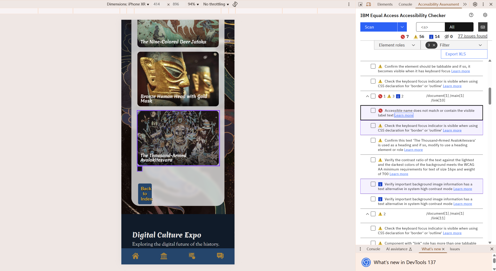

Implementation Rational
Alignment with Client and User Needs
Accessibility
For the final phases, all the pages have been adapted for people with disables. For example screen friendly label of 'aria-label' to state the usage of buttons and links, added a jump to main link for the keyboard user to jump directly to the main content, and this is invisible to the vision user. These adaptations comes from Sofia Marin, who lost her vision since early ages. The measurements above helps her to easily engaging in and browsing through the whole site.
Digital Museum
The page digital museum are designed both for Mei and Indiana Jones, both of them want a virtual form of museum to view and investigate lost artifacts.
Interactive Map
The interactive map is for Mei and Sofia, both of them want an engaging way of learning new knowledges for different cultures, so this interactive component will serve well for their purpose.
Community
This part is for Indiana Jones, he always want to have a forum or community to share his findings for his colleagues and friends, so this component fits his demands.
Accessibility and Ethical Considerations
Accessibility
Like the last part stated, this site has adaptations for people with disabilities, especially for blind and keyboard user. Despite the content mentioned above, this site also includes:
Accessibility began with ensuring the site functioned seamlessly across devices. As implemented during the mobile adaptation phase, layouts were adjusted using flexible grids and media queries to support varied screen sizes, ensuring readability and interaction consistency on mobile, tablet, and desktop.
Using semantic HTML structure, clear heading levels, and sufficient color contrast (particularly in the filter module), the interface supports users with visual impairments or cognitive load sensitivity. Font sizes, spacing, and card components were optimized to improve scanning and comprehension.
As developed during the translation and Nine-Colored Deer Story stages, artifact descriptions and stories were provided in both Chinese and English. AI-assisted translation was refined to ensure clarity and contextual accuracy, making the content accessible to a broader, international audience while respecting original cultural meanings.
While not all elements were finalized with alt text at the initial stage, the design framework included placeholder support for image descriptions, ensuring future compatibility with screen readers and enhancing usability for users with visual impairments.
Hover effects, interactive components, and buttons were tested to ensure they provided feedback without relying solely on color or motion. This reduces potential barriers for users with motor or perceptual disabilities.
Ethical Concern
Throughout the project, I made clear distinctions between original contributions and AI-assisted content. AI tools were used primarily for draft generation, language refinement, and code structuring, with all outputs critically reviewed and adapted to maintain originality. This aligns with academic integrity and responsible AI use.
In sections like Dunhuang Mogao Caves Intro, ethical awareness was maintained by avoiding the oversimplification or exoticization of cultural heritage. Narratives were framed respectfully, with AI-generated content adjusted to reflect historical accuracy and appropriate tone.
Design decisions were consistently guided by the goal of accessibility for diverse users—whether through language, layout, or interactivity. Ethical design was viewed as not only avoiding harm, but actively promoting understanding and inclusion.
Variations and Changes from A3 Proposal
Functionality
Story Board
This part is abandoned due to the overwhelming content of the whole site, and lack of time to complete more sites.
Blog
I have combined this part with the forum, and simplified the content due to overwhelming workload.
Simulated Cultural Relic Restoration
This part is abandoned due to technical challenges and constraints. This feature aims to let the user experience the process of repairing a damaged relic by dragging the debris to its original place. This is specifically hard due to its interactivity, also this interaction needs external API, so this part is abandoned in the final stage.
Language Translator
This part is for Indiana Jones, he always want to have a forum or community to share his findings for his colleagues and friends, so this component fits his demands.
Private Journal
Fail to achieve this functionality is similar to the last part, due to technical challenges and lack of time to delpoy those complex functionalities.
AR and VR Experience
This emerging experience is failed due to the equipment limitation and time restrictions, also I don't think this part is accessibility friendly due to the complex functionality and lack of navigation. So I decide to discard this during the planning stage.
Audio Tour
This is original designed for people with the blind, for them to have a better experience when browsing the museum and interactive map. But according to my testing, the website will become extremely laggy if putting into an audio file during the loading stage, which I don't think is a good implementation. Further, screen reader will serve the similar way for the audio tour.
Styles
Page Layout
I have altered some page layout stated in WP3 due to difficulties encountered during the mobile adaptation process. Also some layout are unreasonable or unfit with my whole style, so I have changed the structure according to the stucture.
Font
The font that I've chosen is unclear and too gaudy to recognize, so I used some obvious fonts to replace the original one.
Color Style
I have abandoned some color with low contrast or extreme impact , like the combination of indigo and gold, it's a disaster to use this combination as text and background.
Challenges and Strategies
Issues of using AI
The most frustrating problem during the usage of AI, is the content that it provided does nothing on my website, or the structure does not fit the demands that I want. When this happens, I will try to ask AI to provide me a simple prototype to test if my thought could work properly. If it works, I will then deploy the prototype onto my website, and check each of my css files and js files to see which one is the disturbing factor. If the prototype couldn't work as I'm expected, I will state the current problem and declare my demands again with specific changing point to AI again, until it provides a satisfied prototype.
Decision Making
This part comes to the decision making. Due to the restriction of time and my technical ability, I can't even understand what AI has provivded to me sometimes. So I have to decide if I should give up on this functionality and find a replacement. This process is frustrating since I have to resect my complete design. The way to overcome this difficulty is to insist the principle of functionality first, outfit last, so that I can put my efforts in building the basic functionalities instead of wasting time in appearances.
Accessibility Audit
Accessibility Checking Result

This is the scan result of the main page, a total of 7 violations that needs to be corrected. Here are the violation statistics for each page:
So according the scan result, I make changes to correct those violations. My conclusion is, includes all the main content inside the 'main' tag, gives all interactable features an aria-lable to helps the screen reader defines its usage, and includes an alt for each image in the site.